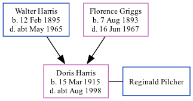

Doris Louvain Pilcher (née Harris) 1915 - c1998
[ Home ] | [ Calendar ] | [ Surnames Index ] | [ Family History ]A domestic assistant hospital and the eldest of 3 children of Walter Harris (a general post office cleaner) and Florence Griggs, Doris Harris, the third cousin once-removed on the father's side of Nigel Horne, was born in Hackney, London, England on Mar 15, 19151,2,3. She married Reginald Pilcher in Thanet, Kent, England around Nov 19474. On Sep 29, 1939, she lived at 6 Randolph Square, Margate, Kent1.
She died c. Aug 1998 in Thanet3.
Parents
- Walter Thomas was born on Feb 12, 1895
- Florence May was born on Aug 7, 1893
Citations
- 1939 Register - Findmypast (was recorded at this address)
- England & Wales births 1837-2006 - Findmypast
- England & Wales deaths 1837-2007 - Findmypast
- England & Wales Marriages 1837-2005 - Findmypast
Media
England & Wales births 1837-2006 - BMD/B/1915/1/AZ/000664/093
1939 Register - TNA/R39/1755/1755A/004/29
England & Wales marriages 1837-2005 - BMD/M/1947/4/AZ/000620/052
England & Wales deaths 1837-2007 - BMD/D/1998/8/82725404
Family Tree
Generated by Ged2Site. Last updated on Jul 20, 2025